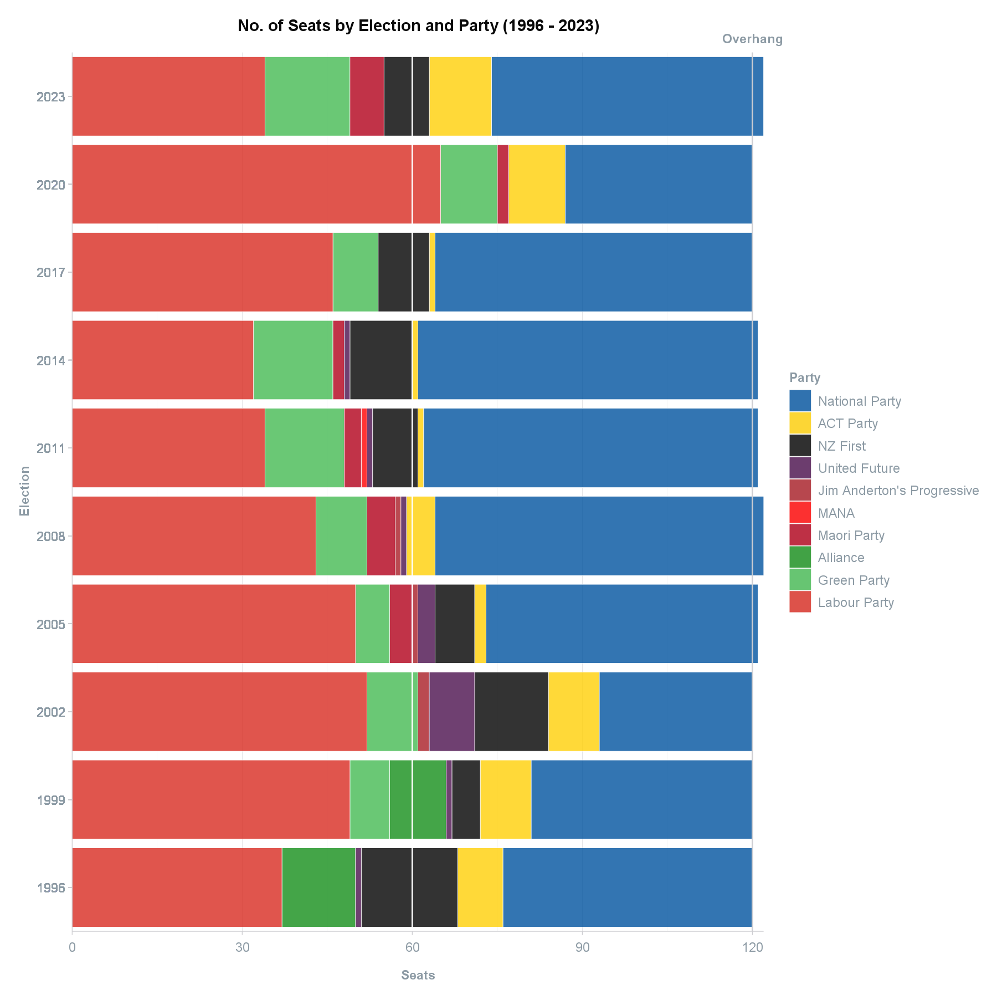
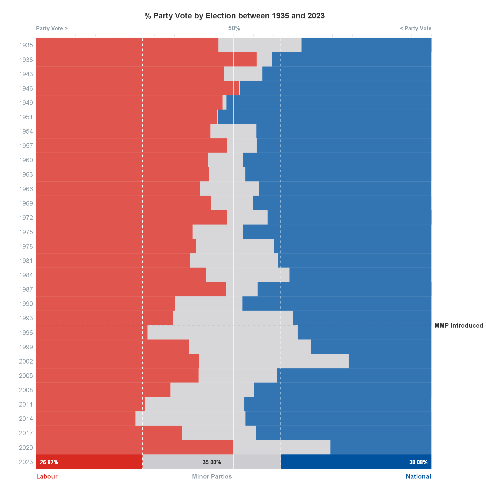

This article provides examples of using each the
summary and preMMP_results datasets.
Summary
The summary dataset contains the overall results at the
national-level by Election, Ballot, and Party. It can be used to find
the number of seats, votes (n & %), and nominations/on party list by
ballot type - Candidate Vote, Party Vote, or Total (Seats column =
Candidate + Party; Vote column = Party only). It can also be used to
find the number of overhang seats and which party these can be
attributed to.
NB overhang seats occur when the Party Vote entitles that party
to fewer seats than the number of electorate seats that it won.
View the Party Vote and Candidate Vote for
2023:
# Load datasets by using the following helper function:
df <- get_data("summary")
# Alternatively, use: data("summary")
df %>%
filter(Ballot != "Total", Election == 2023) %>%
arrange(-Percentage) %>%
head(n = 10)
#> Election Ballot Party Seats Votes Percentage Nominated
#> 1 2023 Candidate National Party 43 1192251 43.47 67
#> 2 2023 Party National Party 5 1085851 38.08 74
#> 3 2023 Candidate Labour Party 17 855963 31.21 72
#> 4 2023 Party Labour Party 17 767540 26.92 76
#> 5 2023 Party Green Party 12 330907 11.61 49
#> 6 2023 Party ACT Party 9 246473 8.64 60
#> 7 2023 Candidate Green Party 3 226575 8.26 52
#> 8 2023 Party NZ First 8 173553 6.09 35
#> 9 2023 Candidate ACT Party 2 149507 5.45 59
#> 10 2023 Candidate Maori Party 6 106584 3.89 17
#> Registered Successful
#> 1 Yes Yes
#> 2 Yes Yes
#> 3 Yes Yes
#> 4 Yes Yes
#> 5 Yes Yes
#> 6 Yes Yes
#> 7 Yes Yes
#> 8 Yes Yes
#> 9 Yes Yes
#> 10 Yes YesView the Party Vote (%) of successful parties only to determine where the overhang seats in 2023 can be attributed to:
df %>%
filter(Successful == "Yes", Ballot == "Total", Election == 2023) %>%
group_by(Election) %>%
mutate(`%` = Votes/sum(Votes)*100) %>%
ungroup() %>%
mutate(Overhang = Seats-round(120*`%`/100,0))
#> # A tibble: 6 × 11
#> Election Ballot Party Seats Votes Percentage Nominated Registered
#> <dbl> <chr> <chr> <int> <dbl> <dbl> <int> <chr>
#> 1 2023 Total ACT Party 11 2.46e5 8.64 119 Yes
#> 2 2023 Total Green Party 15 3.31e5 11.6 101 Yes
#> 3 2023 Total Labour Par… 34 7.68e5 26.9 148 Yes
#> 4 2023 Total Maori Party 6 8.78e4 3.08 48 Yes
#> 5 2023 Total NZ First 8 1.74e5 6.09 69 Yes
#> 6 2023 Total National P… 48 1.09e6 38.1 141 Yes
#> # ℹ 3 more variables: Successful <chr>, `%` <dbl>, Overhang <dbl>Plot the number of seats won by party at each election:
df %>%
# remove parties which did not win a seat
filter(Successful == "Yes", Ballot == "Total") %>%
ggplot(aes(x = Election, y = Seats,
fill = factor(Party, levels = c("National Party","ACT Party","NZ First",
"United Future","Jim Anderton's Progressive",
"MANA","Maori Party","Alliance","Green Party",
"Labour Party")))) +
geom_bar(stat="identity", colour="white", linewidth=0.15, alpha=0.8) +
# indicate majority required for a 120 seat parliament
geom_hline(yintercept = 60, colour = "white", linewidth=0.5) +
# indicate overhang seats
geom_hline(yintercept = 120, colour = scgUtils::colour_pal("French Grey")) +
annotate("text", x=2025, y =120, label = "Overhang",
colour = scgUtils::colour_pal("Regent Grey"),
size=3.5, fontface=2) +
coord_flip(clip = "off", xlim = c(1994.5,2024.5)) +
labs(title = "No. of Seats by Election and Party (1996 - 2023)",
fill = "Party") +
scale_fill_manual(values = scgUtils::colour_pal("polNZ")) +
scale_y_continuous(expand = c(0,0)) +
scale_x_continuous(expand = c(0,0), "Election",
labels = as.character(df$Election), breaks = df$Election) +
scgUtils::theme_scg() +
theme(panel.grid.major.y = element_blank(),
panel.grid.minor.y = element_blank())
preMMP Results
This dataset can be combined with the preMMP_results
dataset which contains the overall results between 1890 and 1993 by
party at the national-level.
df <- df %>%
filter(Ballot == "Total") %>%
mutate(Party = ifelse(Successful == "Yes", Party, "Other")) %>%
group_by(Election, Party) %>%
summarise(Seats = sum(Seats), Votes = sum(Votes), .groups = 'drop') %>%
ungroup() %>%
group_by(Election) %>%
mutate(Percentage = round(Votes/sum(Votes)*100),2) %>%
ungroup() %>%
select(Election, Party, Seats, Percentage)
df1 <- get_data("preMMP_results")
df2 <- rbind(df, df1)
df2 <- df2 %>%
# filter 1935 until current time (since the beginning of the National and Labour parties)
filter(Election >= 1935) %>%
mutate(Party = ifelse(Party %in% c("National Party", "Labour Party"), Party,
ifelse(Party == "United-Reform ('National')", "National Party",
"Other")),
Party = factor(Party, levels = c("National Party", "Other", "Labour Party"))) %>%
group_by(Election, Party) %>%
summarise(Percentage = round(sum(Percentage),2), .groups = 'drop') %>%
ungroup()
df2 %>%
ggplot(aes(x = reorder(Election, -Election), y = Percentage,
fill = Party)) +
geom_bar(stat = "identity", alpha = 0.8, width = 1, size = 0) +
geom_bar(data = df2%>%filter(Election == 2023), aes(x = 1, y = Percentage, fill = Party),
stat = "identity", alpha = 1, width = 1) +
# Add 50% line
geom_hline(yintercept = 50, colour = "white") +
annotate("text", x = 31.2, y = 50, label = "50%", size = 3.5, fontface = 2,
colour = scgUtils::colour_pal("Regent Grey")) +
annotate("text", x = 31.2, y = 0, label = "Party Vote >", size = 3, fontface = 2,
colour = scgUtils::colour_pal("Regent Grey"), hjust = 0) +
annotate("text", x = 31.2, y = 100, label = "< Party Vote", size = 3, fontface = 2,
colour = scgUtils::colour_pal("Regent Grey"), hjust = 1) +
# Add dashed lines for 2023 result
geom_hline(yintercept = df2$Percentage[df2$Election == 2023 & df2$Party == "Labour Party"],
colour = "white", linewidth = 0.5, linetype = "dashed") +
geom_hline(yintercept = 100-df2$Percentage[df2$Election == 2023 & df2$Party == "National Party"],
colour = "white", linewidth = 0.5, linetype = "dashed") +
# Add introduction of MMP line
geom_vline(xintercept = 10.5, colour = scgUtils::colour_pal("Black80"),
linetype = "dashed", linewidth = 0.25) +
annotate("text", x = 10.5, y = 100.75, label = "MMP introduced", size = 3.5, fontface = 2,
colour = scgUtils::colour_pal("Black80"), hjust = 0) +
# Add text to 2023 result
geom_text(x = 1, y = 1,
label = paste0(df2$Percentage[df2$Election == 2023 & df2$Party == "Labour Party"], "%"),
hjust = 0, size = 3, colour = "white") +
annotate("text", x = 0, y = 0, label = "Labour", size = 3.5, fontface = 2,
colour = "#D82A20", hjust = 0) +
geom_text(x = 1, y = df2$Percentage[df2$Election == 2023 & df2$Party == "Labour Party"]+
(df2$Percentage[df2$Election == 2023 & df2$Party == "Other"]/2),
label = paste0(format(df2$Percentage[df2$Election == 2023 & df2$Party == "Other"],
nsmall=2), "%"),
hjust = 0.5, size = 3, colour = scgUtils::colour_pal("Black80")) +
annotate("text", x = 0, y = df2$Percentage[df2$Election == 2023 & df2$Party == "Labour Party"]+
(df2$Percentage[df2$Election == 2023 & df2$Party == "Other"]/2),
label = "Minor Parties", size = 3.5, fontface = 2,
colour = scgUtils::colour_pal("Regent Grey"), hjust = 0.5) +
geom_text(x = 1, y = 99,
label = paste0(df2$Percentage[df2$Election == 2023 & df2$Party == "National Party"], "%"),
hjust = 1, size = 3, colour = "white") +
annotate("text", x = 0, y = 100,
label = "National", size = 3.5, fontface = 2,
colour = "#00529F", hjust = 1) +
labs(title = "% Party Vote by Election between 1935 and 2023") +
scale_y_continuous(expand = c(0,0), position = "right",
breaks = seq(0, 100, by = 5)) +
scale_fill_manual(values = scgUtils::colour_pal("polNZ")) +
coord_flip(clip = "off", xlim = c(1,30), ylim = c(0,100.25)) +
scgUtils::theme_scg() +
theme(legend.position = "none",
plot.margin = unit(c(1,3,1,1), "cm"),
plot.title = element_text(vjust = 5, colour = scgUtils::colour_pal("Black80")),
panel.grid.major = element_blank(),
panel.grid.minor = element_blank(),
axis.line = element_blank(),
axis.ticks.y = element_blank(),
axis.title.x = element_blank(),
axis.title.y = element_blank(),
axis.text.x = element_blank()
)